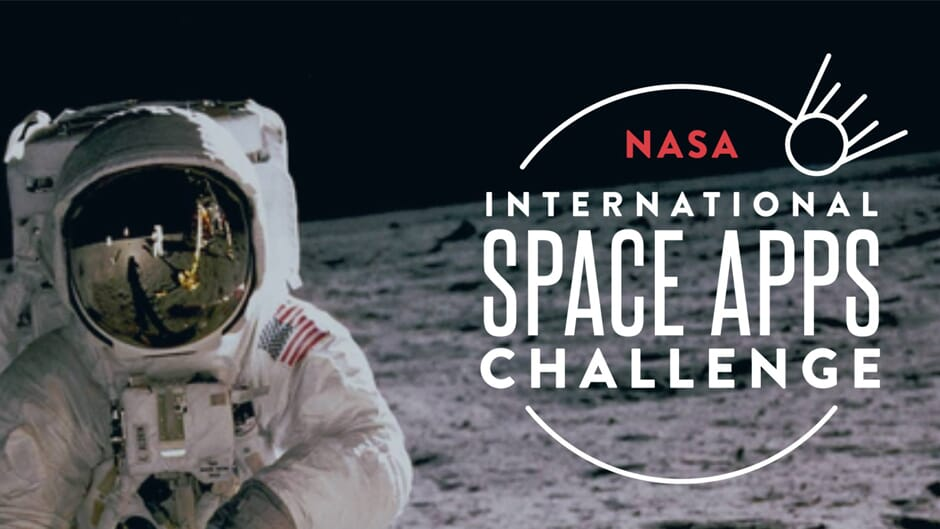

Hackathons
Smart India Hackathon (SIH) 2024
Project: TidyTown
Role: Team Leader
AI-powered system to detect dirtiness in public areas and report it for improved urban sanitation.
Tech Stack: Python, OpenCV, Flask, TensorFlow, MySQL, REST APIs, Bootstrap.
NASA Space Apps Challenge 2024
Project: Real-time Wildfire Detection Platform
Achievement: 🏆 Top 10 Local Team – Recognized for innovation and impact in wildfire management.
Leveraging machine learning and satellite imagery, the system detects fire hazards and delivers live alerts via a user-friendly web interface.
Tech Stack: Python, TensorFlow, JavaScript, Flask, Google Earth Engine, NASA FIRMS.